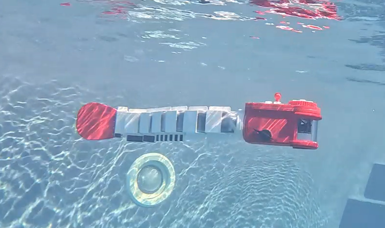
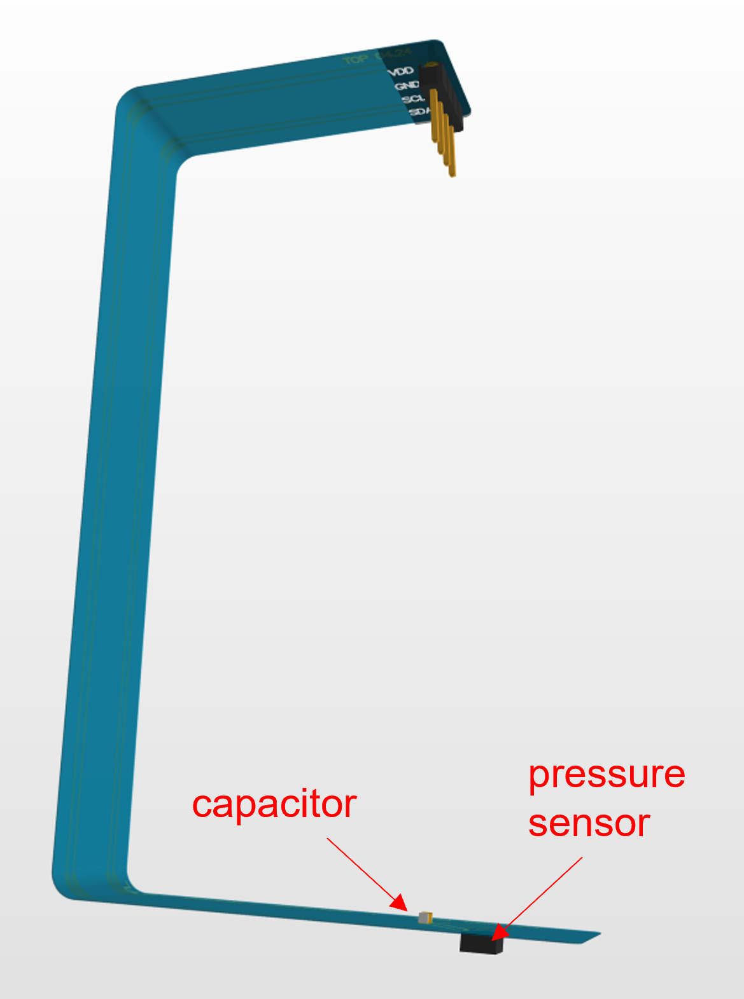
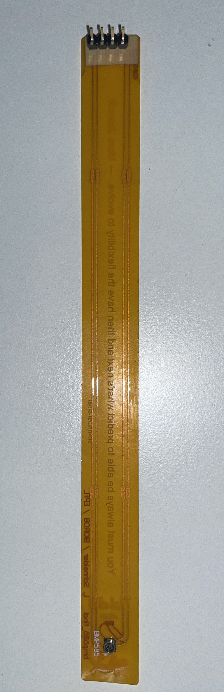

Z-Bot: Zebrafish-like Swimming Robot
Semester project & Research Assistant · BIOROB, EPFL · 2025

- Type
- Semester project + research assistantship
- Where
- BIOROB laboratory, EPFL
- When
- 2024-2025
- Output
- Co-author of a Science Robotics paper
Overview
Z-Bot is a bio-inspired zebrafish-like swimming robot developed at the BIOROB laboratory. I first worked on it in a semester project, adding closed-loop depth control, and later as a research assistant characterizing its actuators for a study on the energy efficiency of intermittent swimming, published in Science Robotics.
Semester project: depth control
- Selection and evaluation of candidate depth sensors.
- Electrical and mechanical integration of the sensor into the robot.
- Implementation of closed-loop depth control.
Research assistant: actuator characterization
- Design and execution of an experimental setup to characterize the Dynamixel servomotors of the robot.
- Motor communication through a U2D2 USB interface using the Dynamixel Python SDK.
Publication
X. Liu, F. A. Longchamp, L. Zunino, L. Gevers, L. R. Schneider, S. I. Bothner, A. Guignard, A. Crespi, G. Bellegarda, A. Bernardino, E. A. Naumann, A. J. Ijspeert (2026), “Energy efficiency and neural control of continuous versus intermittent swimming in a fishlike robot”, Science Robotics 11(110), eadw7868.
Tools & Skills
Gallery

